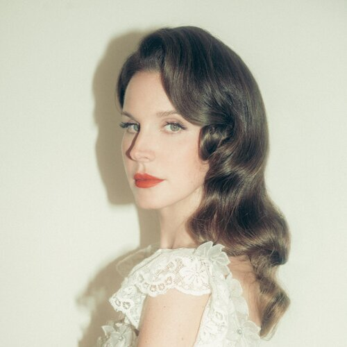
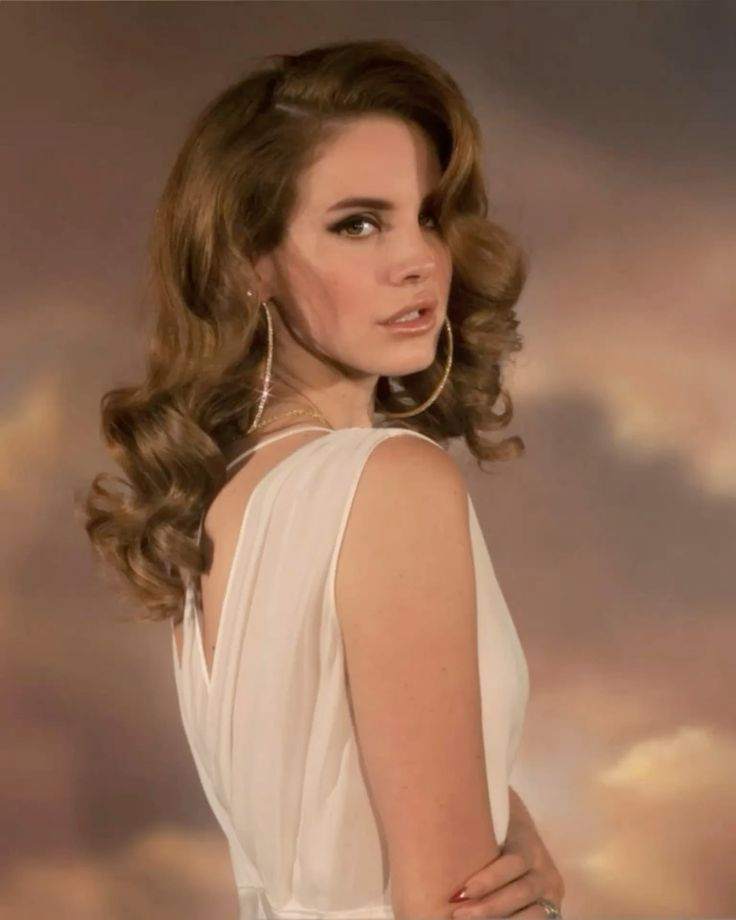
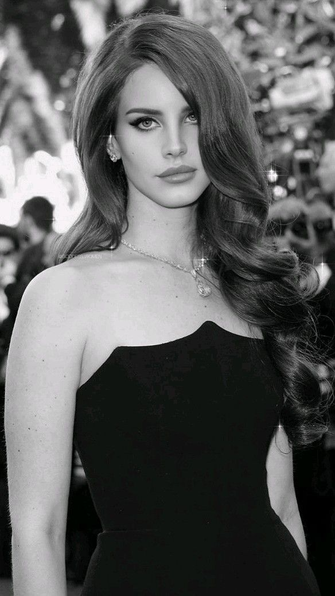
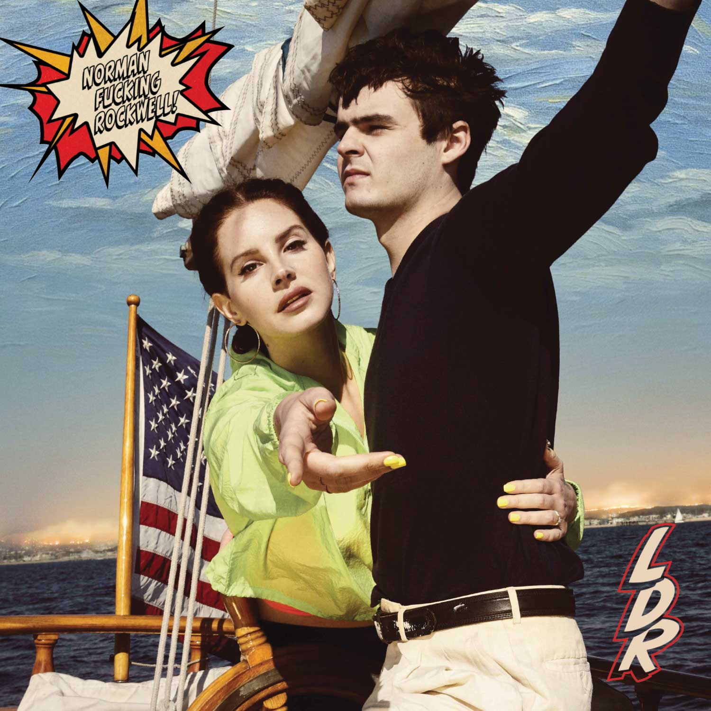
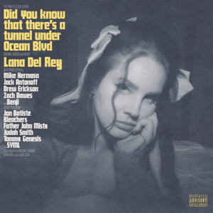

Elizabeth Woolridge Grant (born June 21, 1985), known professionally as Lana Del Rey, is an American singer-songwriter.
Her music is noted for its melancholic exploration of glamor and romance, with frequent references to pop culture and 1950s–1970s Americana.
She is the recipient of various accolades, including an MTV Video Music Award, three MTV Europe Music Awards, two Brit Awards, two Billboard Women in Music awards, and a Satellite Award, in addition to nominations for 11 Grammy Awards and a Golden Globe Award.

This is my favourite album of Lana Del Rey, it is called "Norman Fucking Rockwell!". My favourite song in this albums is "Cinnamon Girl", "Love Song", and "Happiness is a Butterfly".

This is my second favourite album of Lana Del Rey, it is called "Did you know that there's a tunnel under Ocean Blvd". My favourite song in this albums is "Sweet", "Kitsungi", "Fishtail" and "Let the Light in".
This is my third favourite album of Lana Del Rey, it is called "Lust for Life". My favourite song in this albums is "Love", "Lust for Life" and "White Mustang".